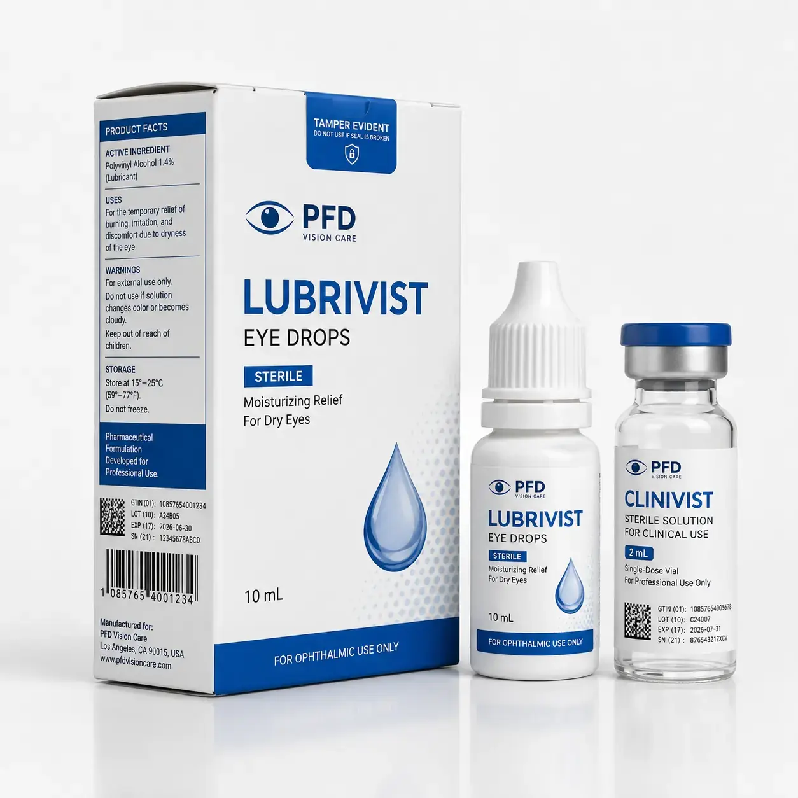

GS1 compliant straight tuck medicine boxes tailored for eye drops, ophthalmic care, small clinical vial kits and prescription packaging lines. The format supports barcode readability, tamper-proof closure logic, serialized coding areas and compact shelf-efficient structure, making it ideal for regulated healthcare packaging projects with high traceability needs.

GS1 compliant straight tuck medicine boxes tailored for eye drops, ophthalmic care, small clinical vial kits and prescription packaging lines. The format supports barcode readability, tamper-proof closure logic, serialized coding areas and compact shelf-efficient structure, making it ideal for regulated healthcare packaging projects with high traceability needs. We support OEM size, material, structure, logo printing, compliance panels, security coding and export packing for B2B buyers.
| MOQ | 500 PCS custom straight tuck medicine boxes |
|---|---|
| Structure | Straight tuck folding carton with tamper-proof locking / seal area |
| Applications | Eye drops, clinical vials, small pharma kits, ophthalmic care |
| Coding | GS1 barcode, DataMatrix, QR code, SN / LOT / EXP print zones |
| Material | 350gsm SBS / C1S / pharmaceutical paperboard |
| Finish | Matte, gloss, anti-scuff, medical clean print finish |
Send size, quantity, material, coding standard and delivery country to Linda Wang for a fast custom quotation.
WhatsApp Linda Email InquiryGS1 Compliant Straight Tuck Tamper-Proof Medicine Box for Eye Drops and Clinical Vials is written for high-intent B2B buyers looking for custom packaging manufacturing, compliance-ready structures, anti-counterfeit packaging, variable data printing and export packaging solutions. This page uses clear commercial language, industry keywords, customization details and buyer-first information that work well for Google indexing and AI answer engines.
Suitable for pharmaceutical brands, medical aesthetic brands, contract packers, distributors.
We can customize dimensions, board grade, insert style, print color, logo, barcode layout, QR code, serialized data, anti-counterfeit features, finishing effect and export carton configuration.
Yes. We can reserve and print compliant barcode panels, GS1 DataMatrix and variable data as required.
Yes. We customize the inner size to fit eye drop bottles, inserts, vials and leaflets.
Recommended buyer brief: product size, pack count, unit contents, required coding standard, target market, artwork style, quantity, compliance notes and shipping destination. MOQ 500 PCS. OEM/customize only.
MOQ 500 PCS - Fast Factory Quote
Click below to contact us quickly by WhatsApp or email. We can help with dieline, samples, printing, materials and worldwide shipping.
Chat on WhatsAppEmail Inquirylinda@colorprintingpackage.com